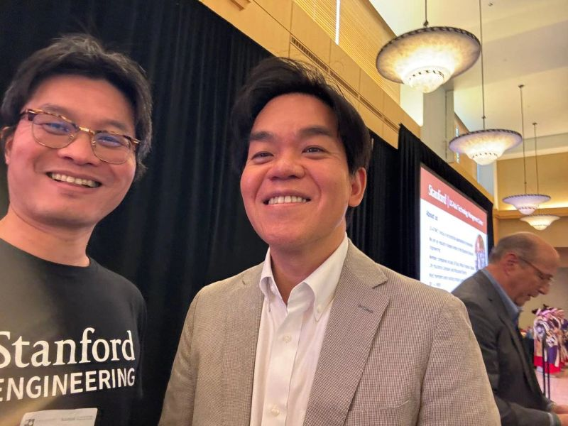

🚀 Scale Isn't Everything in AI

Lewis Wang with Sakana AI co-founder Ren Ito
Fresh from the 2026 Japan–U.S. Innovation Awards Symposium, held on Thursday, July 16, 2026 at Stanford University, our CIO Lewis Wang shared a crucial insight on the AI race:
"Anthropic is operating well within legal frameworks... The real focus should be on Sakana AI. For a small team to disrupt the market and emerge victorious amidst intense competition from tech giants in 2026 demands a unique competitive advantage."
The Takeaway
While billions pour into massive US conglomerates, Tokyo-based Sakana AI proves that lean, hyper-focused teams can outmaneuver the giants through clever, efficient architecture rather than sheer compute spend.
Our Strategy: Innovation isn't just about massive scale—it's about agility.
We are actively studying these high-efficiency disruptors to keep our own enterprise tech stack ahead of the curve.